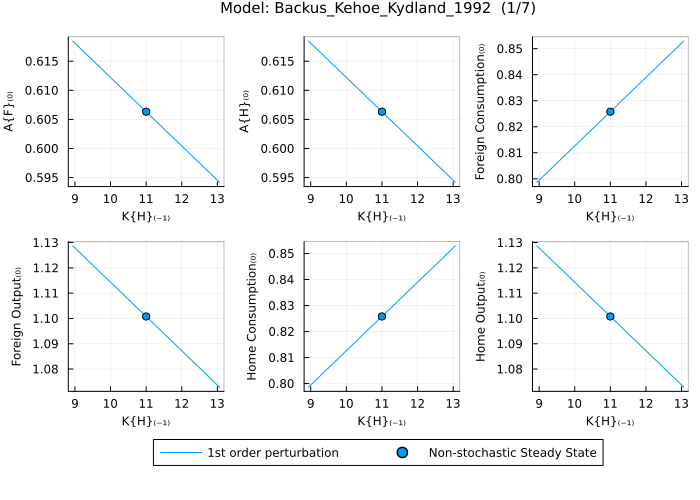

Policy Functions
The plot_solution function visualizes the solution of the model (mapping of past states to present variables) around the relevant steady state (e.g. higher order perturbation algorithms are centred around the stochastic steady state).
The relevant steady state is plotted along with the mapping from the chosen past state to one present variable per subplot. All other (non-chosen) states remain in the relevant steady state.
In the case of pruned higher order solutions there are as many (latent) state vectors as the perturbation order. The first and third order state vectors are the non-stochastic steady state and the second order state vector is the stochastic steady state. Deviations for the chosen state are only added to the first order state. The plot shows the mapping from σ standard deviations (first order) added to the first order non-stochastic steady state and the present variables. Note that there is no unique mapping from the "pruned" states and the "actual" reported state. Hence, the plots shown are just one realisation of infinitely many possible mappings.
If the model contains occasionally binding constraints and ignore_obc = false they are enforced using shocks.
First, define and load a model:
@model Gali_2015_chapter_3_nonlinear begin
W_real[0] = C[0] ^ σ * N[0] ^ φ
Q[0] = β * (C[1] / C[0]) ^ (-σ) * Z[1] / Z[0] / Pi[1]
R[0] = 1 / Q[0]
Y[0] = A[0] * (N[0] / S[0]) ^ (1 - α)
R[0] = Pi[1] * realinterest[0]
R[0] = 1 / β * Pi[0] ^ ϕᵖⁱ * (Y[0] / Y[ss]) ^ ϕʸ * exp(nu[0])
C[0] = Y[0]
log(A[0]) = ρ_a * log(A[-1]) + std_a * eps_a[x]
log(Z[0]) = ρ_z * log(Z[-1]) - std_z * eps_z[x]
nu[0] = ρ_ν * nu[-1] + std_nu * eps_nu[x]
MC[0] = W_real[0] / (S[0] * Y[0] * (1 - α) / N[0])
1 = θ * Pi[0] ^ (ϵ - 1) + (1 - θ) * Pi_star[0] ^ (1 - ϵ)
S[0] = (1 - θ) * Pi_star[0] ^ (( - ϵ) / (1 - α)) + θ * Pi[0] ^ (ϵ / (1 - α)) * S[-1]
Pi_star[0] ^ (1 + ϵ * α / (1 - α)) = ϵ * x_aux_1[0] / x_aux_2[0] * (1 - τ) / (ϵ - 1)
x_aux_1[0] = MC[0] * Y[0] * Z[0] * C[0] ^ (-σ) + β * θ * Pi[1] ^ (ϵ + α * ϵ / (1 - α)) * x_aux_1[1]
x_aux_2[0] = Y[0] * Z[0] * C[0] ^ (-σ) + β * θ * Pi[1] ^ (ϵ - 1) * x_aux_2[1]
log_y[0] = log(Y[0])
log_W_real[0] = log(W_real[0])
log_N[0] = log(N[0])
pi_ann[0] = 4 * log(Pi[0])
i_ann[0] = 4 * log(R[0])
r_real_ann[0] = 4 * log(realinterest[0])
M_real[0] = Y[0] / R[0] ^ η
end
@parameters Gali_2015_chapter_3_nonlinear begin
σ = 1
φ = 5
ϕᵖⁱ = 1.5
ϕʸ = 0.125
θ = 0.75
ρ_ν = 0.5
ρ_z = 0.5
ρ_a = 0.9
β = 0.99
η = 3.77
α = 0.25
ϵ = 9
τ = 0
std_a = .01
std_z = .05
std_nu = .0025
endCalling plot_solution requires specifying a state variable. By default, it plots all endogenous variables, that do vary for different values of the specified state, as functions of the specified state over a range of ±2 standard deviations:
plot_solution(Gali_2015_chapter_3_nonlinear, :A)
The function plots each endogenous variable in period t against the state variable A in t-1. Each subplot shows how the variable changes on the y-axis as A varies within the specified range over the x-axis. The relevant steady state is indicated by a circle of the same color as the line. The title of each subplot indicates the variable name and the title of the overall plot indicates the model name, and page number (if multiple pages are needed). The legend below the plots indicate the solution algorithm used and the nature of the steady state (stochastic or non-stochastic).
Combine Policy Functions with plot_solution!
The plot_solution! function (note the exclamation mark !) adds additional policy functions to an existing plot created with plot_solution, enabling direct comparison between different scenarios. Any input argument that affects the model's output (such as solution algorithm, parameter values, or occasionally binding constraints) can be varied to compare how these changes influence the policy functions. See the respective subsections below (e.g., Solution Algorithm, Parameter Values, Ignoring Occasionally Binding Constraints) for details on specific arguments.
When using plot_solution!, the new policy function is overlaid on the existing plot with a different color. Both the policy function line and the steady state marker (circle) use the same color to make identification easier.
Legend and table behavior:
- When inputs differ in one dimension (e.g., only the algorithm changes), the legend displays the value of that input dimension for each line (e.g.,
:first_order,:second_order). - When inputs differ in multiple dimensions (e.g., both algorithm and parameters change), the legend shows sequential numbers (1, 2, 3, ...) and references a table below the plot that details all input differences for each numbered scenario.
- Tables below the plot show relevant information such as input differences and steady state values to help identify differences across scenarios.
Example with single input difference:
When only one input differs (e.g., the solution algorithm), the legend shows the algorithm names directly:
# Plot first-order solution
plot_solution(Gali_2015_chapter_3_nonlinear, :A)
# Add second-order solution to the same plot
plot_solution!(Gali_2015_chapter_3_nonlinear, :A,
algorithm = :second_order)
The legend will display :first_order and :second_order to identify each policy function.
Example with multiple input differences:
When multiple inputs differ (e.g., both algorithm and parameters), the legend shows sequential numbers and a table details the differences:
# Plot with baseline parameters
plot_solution(Gali_2015_chapter_3_nonlinear, :A,
parameters = :β => 0.99)
# Add with different algorithm AND parameters
plot_solution!(Gali_2015_chapter_3_nonlinear, :A,
parameters = :β => 0.95,
algorithm = :second_order)
The legend will show 1 and 2, with a table below the plot listing the parameter and algorithm values for each scenario.
State Variable (Required)
The state argument (type: Union{Symbol, String}) specifies which state variable to vary. This must be a state variable from the model (variables with lagged values). If a state variable is provided that is not part of the model's state vector, an error is raised and the valid state variables are listed.
plot_solution(Gali_2015_chapter_3_nonlinear, :A) # Using Symbol
plot_solution(Gali_2015_chapter_3_nonlinear, "A") # Using StringVariables to Plot
The variables argument (default: :all) specifies for which variables to show results. Variable names can be specified as either a Symbol or String (e.g. :y or "y"), or Tuple, Matrix or Vector of String or Symbol. Any variables not part of the model will trigger a warning. :all_excluding_auxiliary_and_obc includes all variables except auxiliary variables and those related to occasionally binding constraints (OBC). :all_excluding_obc includes all variables except those related to occasionally binding constraints. :all includes all variables.
Specific variables can be selected to plot. The following example selects only output (Y) and inflation (Pi) using a Vector of Symbols:
plot_solution(Gali_2015_chapter_3_nonlinear, :A,
variables = [:Y, :Pi])
The plot now displays only the two selected variables (sorted alphabetically), with two subplots for each shock. The same can be done using a Tuple:
plot_solution(Gali_2015_chapter_3_nonlinear, :A,
variables = (:Y, :Pi))a Matrix:
plot_solution(Gali_2015_chapter_3_nonlinear, :A,
variables = [:Y :Pi])or providing the variable names as Strings:
plot_solution(Gali_2015_chapter_3_nonlinear, :A,
variables = ["Y", "Pi"])or a single variable as a Symbol:
plot_solution(Gali_2015_chapter_3_nonlinear, :A,
variables = :Y)or as a String:
plot_solution(Gali_2015_chapter_3_nonlinear, :A,
variables = "Y")Then there are some predefined options:
:all_excluding_auxiliary_and_obc plots all variables except auxiliary variables and those used to enforce occasionally binding constraints (OBC).
plot_solution(Gali_2015_chapter_3_nonlinear, :A,
variables = :all_excluding_auxiliary_and_obc):all_excluding_obc plots all variables except those used to enforce occasionally binding constraints (OBC).
plot_solution(Gali_2015_chapter_3_nonlinear, :A,
variables = :all_excluding_obc)To see auxiliary variables, use a model that defines them. The FS2000 model can be used:
@model FS2000 begin
dA[0] = exp(gam + z_e_a * e_a[x])
log(m[0]) = (1 - rho) * log(mst) + rho * log(m[-1]) + z_e_m * e_m[x]
- P[0] / (c[1] * P[1] * m[0]) + bet * P[1] * (alp * exp( - alp * (gam + log(e[1]))) * k[0] ^ (alp - 1) * n[1] ^ (1 - alp) + (1 - del) * exp( - (gam + log(e[1])))) / (c[2] * P[2] * m[1])=0
W[0] = l[0] / n[0]
- (psi / (1 - psi)) * (c[0] * P[0] / (1 - n[0])) + l[0] / n[0] = 0
R[0] = P[0] * (1 - alp) * exp( - alp * (gam + z_e_a * e_a[x])) * k[-1] ^ alp * n[0] ^ ( - alp) / W[0]
1 / (c[0] * P[0]) - bet * P[0] * (1 - alp) * exp( - alp * (gam + z_e_a * e_a[x])) * k[-1] ^ alp * n[0] ^ (1 - alp) / (m[0] * l[0] * c[1] * P[1]) = 0
c[0] + k[0] = exp( - alp * (gam + z_e_a * e_a[x])) * k[-1] ^ alp * n[0] ^ (1 - alp) + (1 - del) * exp( - (gam + z_e_a * e_a[x])) * k[-1]
P[0] * c[0] = m[0]
m[0] - 1 + d[0] = l[0]
e[0] = exp(z_e_a * e_a[x])
y[0] = k[-1] ^ alp * n[0] ^ (1 - alp) * exp( - alp * (gam + z_e_a * e_a[x]))
gy_obs[0] = dA[0] * y[0] / y[-1]
gp_obs[0] = (P[0] / P[-1]) * m[-1] / dA[0]
log_gy_obs[0] = log(gy_obs[0])
log_gp_obs[0] = log(gp_obs[0])
end
@parameters FS2000 begin
alp = 0.356
bet = 0.993
gam = 0.0085
mst = 1.0002
rho = 0.129
psi = 0.65
del = 0.01
z_e_a = 0.035449
z_e_m = 0.008862
endSince both c and P appear in t+2, they generate auxiliary variables in the model. Plotting the policy functions for all variables excluding OBC-related ones means auxiliary variables are shown (same for the default :all option since there are no OBCs in this model):
plot_solution(FS2000, :k,
variables = :all_excluding_obc)
Both c and P appear twice: once as the variable itself and once as an auxiliary variable with the ᴸ⁽¹⁾ superscript, representing the value of the variable in t+1 as expected in t.
:all (default) plots all variables including auxiliary variables and those used to enforce occasionally binding constraints (OBC).
Use the Gali_2015_chapter_3 model with an effective lower bound (note the use of the max function in the Taylor rule):
@model Gali_2015_chapter_3_obc begin
W_real[0] = C[0] ^ σ * N[0] ^ φ
Q[0] = β * (C[1] / C[0]) ^ (-σ) * Z[1] / Z[0] / Pi[1]
R[0] = 1 / Q[0]
Y[0] = A[0] * (N[0] / S[0]) ^ (1 - α)
R[0] = Pi[1] * realinterest[0]
R[0] = max(R̄ , 1 / β * Pi[0] ^ ϕᵖⁱ * (Y[0] / Y[ss]) ^ ϕʸ * exp(nu[0]))
C[0] = Y[0]
log(A[0]) = ρ_a * log(A[-1]) + std_a * eps_a[x]
log(Z[0]) = ρ_z * log(Z[-1]) - std_z * eps_z[x]
nu[0] = ρ_ν * nu[-1] + std_nu * eps_nu[x]
MC[0] = W_real[0] / (S[0] * Y[0] * (1 - α) / N[0])
1 = θ * Pi[0] ^ (ϵ - 1) + (1 - θ) * Pi_star[0] ^ (1 - ϵ)
S[0] = (1 - θ) * Pi_star[0] ^ (( - ϵ) / (1 - α)) + θ * Pi[0] ^ (ϵ / (1 - α)) * S[-1]
Pi_star[0] ^ (1 + ϵ * α / (1 - α)) = ϵ * x_aux_1[0] / x_aux_2[0] * (1 - τ) / (ϵ - 1)
x_aux_1[0] = MC[0] * Y[0] * Z[0] * C[0] ^ (-σ) + β * θ * Pi[1] ^ (ϵ + α * ϵ / (1 - α)) * x_aux_1[1]
x_aux_2[0] = Y[0] * Z[0] * C[0] ^ (-σ) + β * θ * Pi[1] ^ (ϵ - 1) * x_aux_2[1]
log_y[0] = log(Y[0])
log_W_real[0] = log(W_real[0])
log_N[0] = log(N[0])
pi_ann[0] = 4 * log(Pi[0])
i_ann[0] = 4 * log(R[0])
r_real_ann[0] = 4 * log(realinterest[0])
M_real[0] = Y[0] / R[0] ^ η
end
@parameters Gali_2015_chapter_3_obc begin
R̄ = 1.0
σ = 1
φ = 5
ϕᵖⁱ = 1.5
ϕʸ = 0.125
θ = 0.75
ρ_ν = 0.5
ρ_z = 0.5
ρ_a = 0.9
β = 0.99
η = 3.77
α = 0.25
ϵ = 9
τ = 0
std_a = .01
std_z = .05
std_nu = .0025
R > 1.0001
endPlotting the policy functions for all variables including OBC-related ones reveals the OBC-related auxiliary variables:
plot_solution(Gali_2015_chapter_3_obc, :A)
The OBC-related variables appear in the last two subplots. Note that high values of A in the previous period lead to low values of the nominal interest rate R in the current period, hitting the lower bound (indicated by the flat section of the policy function). For values of A where the constraint is binding the OBC-related variables also vary with A:

The effective lower bound is enforced using shocks to the equation containing the max statement. See the documentation for details on constructing occasionally binding constraints. For this specific model, examine the equations the parser generated to enforce the OBC:
get_equations(Gali_2015_chapter_3_obc)
# 68-element Vector{String}:
# "W_real[0] = C[0] ^ σ * N[0] ^ φ"
# "Q[0] = ((β * (C[1] / C[0]) ^ -σ * Z[1]) / Z[0]) / Pi[1]"
# "R[0] = 1 / Q[0]"
# "Y[0] = A[0] * (N[0] / S[0]) ^ (1 - α)"
# "R[0] = Pi[1] * realinterest[0]"
# "χᵒᵇᶜ⁺ꜝ¹ꜝˡ[0] = R̄ - R[0]"
# ⋮
# "ϵᵒᵇᶜ⁺ꜝ¹ꜝᴸ⁽⁻³⁶⁾[0] = ϵᵒᵇᶜ⁺ꜝ¹ꜝᴸ⁽⁻³⁵⁾[-1] + activeᵒᵇᶜshocks * ϵᵒᵇᶜ⁺ꜝ¹ꜝ⁽⁴⁾[x]"
# "ϵᵒᵇᶜ⁺ꜝ¹ꜝᴸ⁽⁻³⁷⁾[0] = ϵᵒᵇᶜ⁺ꜝ¹ꜝᴸ⁽⁻³⁶⁾[-1] + activeᵒᵇᶜshocks * ϵᵒᵇᶜ⁺ꜝ¹ꜝ⁽³⁾[x]"
# "ϵᵒᵇᶜ⁺ꜝ¹ꜝᴸ⁽⁻³⁸⁾[0] = ϵᵒᵇᶜ⁺ꜝ¹ꜝᴸ⁽⁻³⁷⁾[-1] + activeᵒᵇᶜshocks * ϵᵒᵇᶜ⁺ꜝ¹ꜝ⁽²⁾[x]"
# "ϵᵒᵇᶜ⁺ꜝ¹ꜝᴸ⁽⁻³⁹⁾[0] = ϵᵒᵇᶜ⁺ꜝ¹ꜝᴸ⁽⁻³⁸⁾[-1] + activeᵒᵇᶜshocks * ϵᵒᵇᶜ⁺ꜝ¹ꜝ⁽¹⁾[x]"
# "ϵᵒᵇᶜ⁺ꜝ¹ꜝᴸ⁽⁻⁴⁰⁾[0] = ϵᵒᵇᶜ⁺ꜝ¹ꜝᴸ⁽⁻³⁹⁾[-1] + activeᵒᵇᶜshocks * ϵᵒᵇᶜ⁺ꜝ¹ꜝ⁽⁰⁾[x]"Solution Algorithm
The algorithm argument (default: :first_order, type: Symbol) specifies which algorithm to use to solve for the dynamics of the model. Available algorithms: :first_order, :second_order, :pruned_second_order, :third_order, :pruned_third_order.
Compare different solution algorithms by overlaying plots with plot_solution!. The example below plots the first-order solution and then overlays the second-order solution for comparison:
# Plot first-order policy function
plot_solution(Gali_2015_chapter_3_nonlinear, :A)
# Overlay second-order to compare
plot_solution!(Gali_2015_chapter_3_nonlinear, :A,
algorithm = :second_order)
The plot now features both policy functions overlaid. The first-order solution is shown in blue, the second-order solution is shown in orange, as indicated in the legend below the plot. The lines correspond to the policy functions at different orders and the circles indicate the relevant steady state for each solution method. Higher order solutions may have different steady states due to the inclusion of risk effects (see e.g. W_real) and their policy functions may differ due to non-linearities captured at higher orders (see e.g. S which has only higher order dynamics).
Additional solution methods can be added to the same plot:
plot_solution!(Gali_2015_chapter_3_nonlinear, :A,
algorithm = :pruned_third_order)
The additional solution appears as another colored line with corresponding entries in the legend. Note that the pruned third-order solution incorporates time-varying risk and reverses the sign of the response for MC and N.
State Variable Range
The σ argument (default: 2, type: Union{Int64, Float64}) specifies the range of the state variable as a multiple of its standard deviation. The state variable varies from -σ * std(state) to +σ * std(state).
Plot over a wider range (±5 standard deviations) using the pruned third-order solution:
plot_solution(Gali_2015_chapter_3_nonlinear, :A,
σ = 5,
algorithm = :pruned_third_order)
This expands the x-axis range, showing how the policy functions behave further from the steady state.
Parameter Values
When no parameters are provided, the solution uses the previously defined parameter values. Parameters can be provided as a Vector of values, or as a Vector or Tuple of Pairs mapping parameter Symbols or Strings to values. The solution is recalculated when new parameter values differ from the previous ones.
Start by changing the discount factor β to 0.95:
plot_solution(Gali_2015_chapter_3_nonlinear, :A,
parameters = :β => 0.95)
The steady states and dynamics changed as a result of changing the discount factor. To better visualize the differences between β = 0.99 and β = 0.95, the two policy functions can be overlaid (compared). Since parameter changes are permanent, first reset β = 0.99 before overlaying the policy function with β = 0.95 on top of it:
# Plot with default parameters
plot_solution(Gali_2015_chapter_3_nonlinear, :A,
parameters = :β => 0.99)
# Overlay with different discount factor to compare
plot_solution!(Gali_2015_chapter_3_nonlinear, :A,
parameters = :β => 0.95)
The legend below the plot indicates which color corresponds to which β value. Note that both the steady states and dynamics differ across the two β values.
Multiple parameters can also be changed simultaneously to compare the results to previous plots. This example changes β to 0.97 and τ to 0.5 using a Tuple of Pairs and define the variables with Symbols:
plot_solution!(Gali_2015_chapter_3_nonlinear, :A,
parameters = (:β => 0.97, :τ => 0.5))
Since the plot function calls now differ in multiple input arguments, the legend indicates which color corresponds to which input combination, with the table showing relevant input combinations.
A Vector of Pairs can also be used:
plot_solution(Gali_2015_chapter_3_nonlinear, :A,
parameters = [:β => 0.98, :τ => 0.25])Alternatively, use a Vector of parameter values in the order they were defined in the model. To obtain them:
params = get_parameters(Gali_2015_chapter_3_nonlinear, values = true)
# 16-element Vector{Pair{String, Float64}}:
# "σ" => 1.0
# "φ" => 5.0
# "ϕᵖⁱ" => 1.5
# "ϕʸ" => 0.125
# "θ" => 0.75
# "ρ_ν" => 0.5
# "ρ_z" => 0.5
# "ρ_a" => 0.9
# "β" => 0.95
# "η" => 3.77
# "α" => 0.25
# "ϵ" => 9.0
# "τ" => 0.5
# "std_a" => 0.01
# "std_z" => 0.05
# "std_nu" => 0.0025
param_vals = [p[2] for p in params]
# 16-element Vector{Float64}:
# 1.0
# 5.0
# 1.5
# 0.125
# 0.75
# 0.5
# 0.5
# 0.9
# 0.95
# 3.77
# 0.25
# 9.0
# 0.5
# 0.01
# 0.05
# 0.0025
plot_solution(Gali_2015_chapter_3_nonlinear, :A,
parameters = param_vals)Ignoring Occasionally Binding Constraints
The ignore_obc argument (default: false, type: Bool), when true, ignores occasionally binding constraints (OBC) even if they are part of the model. This is useful for comparing dynamics with and without OBC. For models with defined OBC, use the ignore_obc argument to ignore them. The following example compares the policy functions of the Gali_2015_chapter_3_obc model with and without OBC. First, examine the policy function with OBC enforced. Since OBC is enforced by default, call:
plot_solution(Gali_2015_chapter_3_obc, :A)
Then overlay the policy function ignoring the OBC:
plot_solution!(Gali_2015_chapter_3_obc, :A,
ignore_obc = true)
The legend indicates which color corresponds to which ignore_obc value. The difference between the two can be noticed at the effective lower bound for R. For values of A where the effective lower bound is reached the shocks enforcing the lower bound act on the economy and the policy function changes for most other variables as well.
Plot Labels
The label argument (type: Union{Real, String, Symbol}) adds custom labels to the plot legend. This is useful when comparing multiple solutions using plot_solution! to overlay plots. By default, labels take on the values of the one dimensional input that differs and are sequential numbers in case the input differs along more than one dimension. Furthermore, custom labels can be provided using this argument. Acceptable inputs are a String, Symbol, or a Real.
# Compare policy functions with different settings
plot_solution(Gali_2015_chapter_3_obc, :A,
algorithm = :pruned_second_order,
parameters = :β => 0.99,
label = "2nd Order with OBC"
)
# Add solution without OBC
plot_solution!(Gali_2015_chapter_3_obc, :A,
algorithm = :pruned_second_order,
ignore_obc = true,
label = "2nd Order without OBC"
)
# Add different parameter setting
plot_solution!(Gali_2015_chapter_3_obc, :A,
algorithm = :pruned_second_order,
parameters = :β => 0.9925,
label = "2nd Order with OBC and β=0.9925"
)
The plot demonstrates how to use labels to describe complex inputs. Here variations in multiple input dimensions are compared: solution algorithms, occasionally binding constraints, and parameter values.
Plot Attributes
The plot_attributes argument (default: Dict(), type: Dict) accepts a dictionary of attributes passed on to the plotting function. See the Plots.jl documentation for details.
The color palette can be customized using the plot_attributes argument. The following example defines a custom color palette (inspired by the European Commission's economic reports) to plot policy functions for multiple solution algorithms using the Gali_2015_chapter_3_nonlinear model. First, define the custom color palette using hex color codes:
ec_color_palette =
[
"#FFD724", # "Sunflower Yellow"
"#353B73", # "Navy Blue"
"#2F9AFB", # "Sky Blue"
"#B8AAA2", # "Taupe Grey"
"#E75118", # "Vermilion"
"#6DC7A9", # "Mint Green"
"#F09874", # "Coral"
"#907800" # "Olive"
]Next, plot the policy function for the first order solution algorithm using the custom color palette:
plot_solution(Gali_2015_chapter_3_nonlinear, :A,
plot_attributes = Dict(:palette => ec_color_palette))Finally, overlay the policy functions for the second and third order solution algorithms using the custom color palette:
for a in [:second_order, :third_order]
plot_solution!(Gali_2015_chapter_3_nonlinear, :A,
algorithm = a,
plot_attributes = Dict(:palette => ec_color_palette))
end
The colors of the policy functions and steady state markers now follow the custom color palette.
Other attributes such as the font family can also be modified (see here for GR font options):
plot_solution(Gali_2015_chapter_3_nonlinear, :A,
plot_attributes = Dict(:fontfamily => "computer modern"))
All text in the plot now uses the Computer Modern font. Note that font rendering inherits the constraints of the plotting backend (GR in this case)—for example, the subscripts (e.g. ₍₀₎) are not rendered properly for this font.
Here is another example that customizes the line style and width:
plot_solution(Gali_2015_chapter_3_nonlinear, :A,
plot_attributes = Dict(:linestyle => :dashdot, :linewidth => 2))
Plots Per Page
The plots_per_page argument (default: 6, type: Int) controls the number of subplots per page. When the number of variables exceeds this value, multiple pages are created. The following example selects 4 variables and sets plots_per_page to 2, resulting in 2 pages with 2 subplots each:
plot_solution(Gali_2015_chapter_3_nonlinear, :A,
variables = [:Y, :Pi, :R, :C],
plots_per_page = 2)
The first page displays the first two variables (sorted alphabetically) with two subplots for each shock. The title indicates this is page 1 of 2.
Display Plots
The show_plots argument (default: true, type: Bool), when true, displays the plots; otherwise, they are only returned as an object.
plot_solution(Gali_2015_chapter_3_nonlinear, :A,
show_plots = false)Saving Plots
The save_plots argument (default: false, type: Bool), when true, saves the plots to disk; otherwise, they are only displayed and returned as an object.
Related arguments control the saving behavior:
save_plots_format(default::pdf, type:Symbol): output format of saved plots. See input formats compatible with GR for valid formats.save_plots_path(default:".", type:String): path where plots are saved. If the path does not exist, it will be created automatically.save_plots_name(default:"solution", type:Union{String, Symbol}): prefix prepended to the filename when saving plots.
Each plot is saved as a separate file with a name indicating the prefix, model name, shocks, and a sequential number for multiple plots (e.g., solution__ModelName__shock__1.pdf).
The following example saves all policy functions for the Gali_2015_chapter_3_nonlinear model as PNG files in the ../plots directory with policy_function as the filename prefix:
plot_solution(Gali_2015_chapter_3_nonlinear, :A,
save_plots = true,
save_plots_format = :png,
save_plots_path = "./../plots",
save_plots_name = :policy_function)The plots appear in the specified folder with the specified prefix. Each plot is saved in a separate file with a name reflecting the model, the shock, and a sequential index when the number of variables exceeds the plots per page.
Variable and Shock Renaming (rename dictionary)
The rename_dictionary argument (default: Dict(), type: AbstractDict{<:Union{Symbol, String}, <:Union{Symbol, String}}) maps variable or shock symbols to custom display names in plots. This is particularly useful when comparing models with different variable naming conventions, allowing them to be displayed with consistent labels.
For example, to rename variables for clearer display:
plot_solution(Gali_2015_chapter_3_nonlinear, :A,
rename_dictionary = Dict(:Y => "Output", :Pi => "Inflation", :R => "Interest Rate"))
This feature is especially valuable when plotting policy functions from different models. Consider comparing FS2000 (which uses R for the interest rate) with Caldara_et_al_2012 (which uses gross_r for the interest rate expressed as a gross return). The rename_dictionary allows harmonizing these names when plotting them together.
Let's first parse the Caldara_et_al_2012 model:
@model Caldara_et_al_2012 begin
V[0] = ((1 - β) * (c[0] ^ ν * (1 - l[0]) ^ (1 - ν)) ^ (1 - 1 / ψ) + β * V[1] ^ (1 - 1 / ψ)) ^ (1 / (1 - 1 / ψ))
exp(s[0]) = V[1] ^ (1 - γ)
1 = (1 + ζ * exp(z[1]) * k[0] ^ (ζ - 1) * l[1] ^ (1 - ζ) - δ) * c[0] * β * (((1 - l[1]) / (1 - l[0])) ^ (1 - ν) * (c[1] / c[0]) ^ ν) ^ (1 - 1 / ψ) / c[1]
Rᵏ[0] = ζ * exp(z[1]) * k[0] ^ (ζ - 1) * l[1] ^ (1 - ζ) - δ
SDF⁺¹[0] = c[0] * β * (((1 - l[1]) / (1 - l[0])) ^ (1 - ν) * (c[1] / c[0]) ^ ν) ^ (1 - 1 / ψ) / c[1]
1 + Rᶠ[0] = 1 / SDF⁺¹[0]
(1 - ν) / ν * c[0] / (1 - l[0]) = (1 - ζ) * exp(z[0]) * k[-1] ^ ζ * l[0] ^ (-ζ)
c[0] + i[0] = exp(z[0]) * k[-1] ^ ζ * l[0] ^ (1 - ζ)
k[0] = i[0] + k[-1] * (1 - δ)
z[0] = λ * z[-1] + σ[0] * ϵᶻ[x]
y[0] = exp(z[0]) * k[-1] ^ ζ * l[0] ^ (1 - ζ)
log(σ[0]) = (1 - ρ) * log(σ̄) + ρ * log(σ[-1]) + η * ω[x]
gross_r[0] = 1 + Rᶠ[0]
end
@parameters Caldara_et_al_2012 begin
β = 0.991
l[ss] = 1/3 | ν
ζ = 0.3
δ = 0.0196
λ = 0.95
ψ = 0.5
γ = 40
σ̄ = 0.021
η = 0.1
ρ = 0.9
endand then plot the solutions from both models with consistent variable names using rename_dictionary:
# First model (FS2000) with lowercase variable names
plot_solution(FS2000, :k,
variables = [:c, :y, :R],
rename_dictionary = Dict(:c => "Consumption", :y => "Output", :R => "Interest Rate"))
# Overlay second model (Caldara_et_al_2012) with different naming, mapped to same display names
plot_solution!(Caldara_et_al_2012, :k,
variables = [:c, :y, :gross_r],
rename_dictionary = Dict(:c => "Consumption", :y => "Output", :gross_r => "Interest Rate"))
As can be seen the steady states and dynamics around the respective steady states differ across states and variables for the two models but they are shown in the same subplots with consistent labels.
The rename_dictionary accepts flexible type combinations for keys and values—both Symbol and String types work interchangeably:
# All of these are valid and equivalent:
Dict(:y => "Output") # Symbol key, String value
Dict("y" => "Output") # String key, String value
Dict(:y => :Output) # Symbol key, Symbol value
Dict("y" => :Output) # String key, Symbol valueThis flexibility is particularly useful for models like Backus_Kehoe_Kydland_1992, which uses String representations of variable and shock names (because of {}):
# Define the Backus model (abbreviated for clarity)
@model Backus_Kehoe_Kydland_1992 begin
for co in [H, F]
Y{co}[0] = ((LAMBDA{co}[0] * K{co}[-4]^theta{co} * N{co}[0]^(1-theta{co}))^(-nu{co}) + sigma{co} * Z{co}[-1]^(-nu{co}))^(-1/nu{co})
K{co}[0] = (1-delta{co})*K{co}[-1] + S{co}[0]
X{co}[0] = for lag in (-4+1):0 phi{co} * S{co}[lag] end
A{co}[0] = (1-eta{co}) * A{co}[-1] + N{co}[0]
L{co}[0] = 1 - alpha{co} * N{co}[0] - (1-alpha{co})*eta{co} * A{co}[-1]
U{co}[0] = (C{co}[0]^mu{co}*L{co}[0]^(1-mu{co}))^gamma{co}
psi{co} * mu{co} / C{co}[0]*U{co}[0] = LGM[0]
psi{co} * (1-mu{co}) / L{co}[0] * U{co}[0] * (-alpha{co}) = - LGM[0] * (1-theta{co}) / N{co}[0] * (LAMBDA{co}[0] * K{co}[-4]^theta{co}*N{co}[0]^(1-theta{co}))^(-nu{co})*Y{co}[0]^(1+nu{co})
for lag in 0:(4-1)
beta{co}^lag * LGM[lag]*phi{co}
end +
for lag in 1:4
-beta{co}^lag * LGM[lag] * phi{co} * (1-delta{co})
end = beta{co}^4 * LGM[+4] * theta{co} / K{co}[0] * (LAMBDA{co}[+4] * K{co}[0]^theta{co} * N{co}[+4]^(1-theta{co})) ^ (-nu{co})* Y{co}[+4]^(1+nu{co})
LGM[0] = beta{co} * LGM[+1] * (1+sigma{co} * Z{co}[0]^(-nu{co}-1)*Y{co}[+1]^(1+nu{co}))
NX{co}[0] = (Y{co}[0] - (C{co}[0] + X{co}[0] + Z{co}[0] - Z{co}[-1]))/Y{co}[0]
end
(LAMBDA{H}[0]-1) = rho{H}{H}*(LAMBDA{H}[-1]-1) + rho{H}{F}*(LAMBDA{F}[-1]-1) + Z_E{H} * E{H}[x]
(LAMBDA{F}[0]-1) = rho{F}{F}*(LAMBDA{F}[-1]-1) + rho{F}{H}*(LAMBDA{H}[-1]-1) + Z_E{F} * E{F}[x]
for co in [H,F] C{co}[0] + X{co}[0] + Z{co}[0] - Z{co}[-1] end = for co in [H,F] Y{co}[0] end
end
@parameters Backus_Kehoe_Kydland_1992 begin
K_ss = 11
K[ss] = K_ss | beta
mu = 0.34
gamma = -1.0
alpha = 1
eta = 0.5
theta = 0.36
nu = 3
sigma = 0.01
delta = 0.025
phi = 1/4
psi = 0.5
Z_E = 0.00852
rho{H}{H} = 0.906
rho{F}{F} = rho{H}{H}
rho{H}{F} = 0.088
rho{F}{H} = rho{H}{F}
end
# Backus model example showing String to String mapping
plot_solution(Backus_Kehoe_Kydland_1992, "K{H}",
rename_dictionary = Dict("K{H}" => "Capital (Home)",
"K{F}" => "Capital (Foreign)",
"Y{H}" => "Output (Home)",
"Y{F}" => "Output (Foreign)"))
Variables or shocks not included in the dictionary retain their default names. The renaming applies to all plot elements including legends, axis labels, and tables.
Verbose Output
The verbose argument (default: false, type: Bool), when true, enables verbose output related to solving the model
plot_solution(Gali_2015_chapter_3_nonlinear, :A,
verbose = true)The code outputs information about solving the steady state blocks. When parameters change, the first-order solution is recomputed; otherwise, it uses the cached solution:
plot_solution(Gali_2015_chapter_3_nonlinear, :A,
parameters = :β => 0.955,
verbose = true)
# Parameter changes:
# β from 0.99 to 0.955
# New parameters changed the steady state.
# Block: 1, - Solved with newton using previous solution - 1.1102230246251565e-16 - 4.2410519540681003e-16 - [6, 6]
# Block: 2, - Solved with newton using previous solution - 1.1102230246251565e-16 - 5.691489219773501e-16 - [3, 3]
# Quadratic matrix equation solver: schur - converged: true in 0 iterations to tolerance: 3.138740904769479e-15
# Block: 1, - Solved using previous solution; residual norm: 0.0
# Block: 2, - Solved using previous solution; residual norm: 1.1102230246251565e-16
# Quadratic matrix equation solver previous solution has tolerance: 3.138740904769479e-15
# Lyapunov equation - converged to tol 1.0e-12: true; iterations: 10; reached tol: 1.3848825622828143e-16; algorithm: doubling
# Block: 1, - Solved using previous solution; residual norm: 0.0
# Block: 2, - Solved using previous solution; residual norm: 1.1102230246251565e-16Numerical Tolerances
The tol argument (default: Tolerances(), type: Tolerances) defines various tolerances for the algorithm used to solve the model. See the Tolerances documentation for more details: ?Tolerances. The tolerances used by the numerical solvers can be adjusted. The Tolerances object allows setting tolerances for the non-stochastic steady state solver (NSSS), Sylvester equations, Lyapunov equation, and quadratic matrix equation (QME). For example, to set tighter tolerances (this example also changes parameters to force recomputation):
custom_tol = Tolerances(qme_acceptance_tol = 1e-12,
sylvester_acceptance_tol = 1e-12)
plot_solution(Gali_2015_chapter_3_nonlinear, :A,
tol = custom_tol,
algorithm = :second_order,
parameters = :β => 0.9555,
verbose = true)
# Parameter changes:
# β from 0.955 to 0.9555
# New parameters changed the steady state.
# Take symbolic derivatives up to second order: 0.695 seconds
# Block: 1, - Solved with newton using previous solution - 3.1401849173675503e-16 - 3.4746121346743126e-13 - [4, 4]
# Block: 2, - Solved with newton using previous solution - 5.20740757162067e-16 - 4.1252659916132045e-16 - [3, 3]
# Quadratic matrix equation solver: schur - converged: true in 0 iterations to tolerance: 4.98829092574606e-15
# Block: 1, - Solved using previous solution; residual norm: 0.0
# Block: 2, - Solved using previous solution; residual norm: 5.551115123125783e-16
# Quadratic matrix equation solver: schur - converged: true in 0 iterations to tolerance: 4.98829092574606e-15
# Sylvester equation - converged to tol 1.0e-12: true; iterations: 10; reached tol: 8.152041655449966e-17; algorithm: doubling
# Block: 1, - Solved using previous solution; residual norm: 0.0
# Block: 2, - Solved using previous solution; residual norm: 5.551115123125783e-16
# Quadratic matrix equation solver: schur - converged: true in 0 iterations to tolerance: 4.98829092574606e-15
# Lyapunov equation - converged to tol 1.0e-12: true; iterations: 10; reached tol: 1.5026261035607414e-16; algorithm: doubling
# Block: 1, - Solved using previous solution; residual norm: 0.0
# Block: 2, - Solved using previous solution; residual norm: 5.551115123125783e-16
# Block: 1, - Solved using previous solution; residual norm: 0.0
# Block: 2, - Solved using previous solution; residual norm: 5.551115123125783e-16This is useful when higher precision is needed or when the default tolerances are insufficient for convergence. Use this argument for specific needs or when encountering issues with the default solver.
Quadratic Matrix Equation Solver
The quadratic_matrix_equation_algorithm argument (default: :schur, type: Symbol) specifies the algorithm to solve quadratic matrix equation (A * X ^ 2 + B * X + C = 0). Available algorithms: :schur, :doubling The quadratic matrix equation solver is used internally when solving the model to first order. Different algorithms are available. The :schur algorithm is generally faster and more reliable, while :doubling can be more precise in some cases (this example also changes parameters to force recomputation):
plot_solution(Gali_2015_chapter_3_nonlinear, :A,
quadratic_matrix_equation_algorithm = :doubling,
parameters = :β => 0.95555,
verbose = true)
# Parameter changes:
# β from 0.9555 to 0.95555
# New parameters changed the steady state.
# Block: 1, - Solved with newton using previous solution - 0.0 - 0.0 - [4, 4]
# Block: 2, - Solved with newton using previous solution - 4.839349969133127e-16 - 4.1390488915798046e-16 - [3, 3]
# Quadratic matrix equation solver: doubling - converged: true in 8 iterations to tolerance: 2.5226767989622104e-16
# Block: 1, - Solved with newton using previous solution - 0.0 - 0.0 - [4, 4]
# Block: 2, - Solved with newton using previous solution - 4.839349969133127e-16 - 4.1390488915798046e-16 - [3, 3]
# Quadratic matrix equation solver previous solution has tolerance: 2.5226767989622104e-16
# Lyapunov equation - converged to tol 1.0e-12: true; iterations: 10; reached tol: 8.580119223206854e-17; algorithm: doubling
# Block: 1, - Solved with newton using previous solution - 0.0 - 0.0 - [4, 4]
# Block: 2, - Solved with newton using previous solution - 4.839349969133127e-16 - 4.1390488915798046e-16 - [3, 3]For most use cases, the default :schur algorithm is recommended. Use this argument for specific needs or when encountering issues with the default solver.
Sylvester Equation Solver
[Default: selector that uses :doubling for smaller problems and switches to :bicgstab for larger problems, Type: Union{Symbol,Vector{Symbol},Tuple{Symbol,Vararg{Symbol}}}]: Algorithm to solve the Sylvester equation (A * X * B + C = X). Available algorithms: :doubling, :bartels_stewart, :bicgstab, :dqgmres, :gmres. The input argument can contain up to two elements in a Vector or Tuple. The first (second) element corresponds to the second (third) order perturbation solution's Sylvester equation. When only one element is provided, it corresponds to the second-order perturbation solution's Sylvester equation. The algorithm to use can be specified for solving Sylvester equations in higher-order solutions. For example, select the :bartels_stewart algorithm for solving the second-order perturbation problem:
plot_solution(Gali_2015_chapter_3_nonlinear, :A,
algorithm = :second_order,
sylvester_algorithm = :bartels_stewart,
verbose = true)
# Quadratic matrix equation solver previous solution has tolerance: 2.5226767989622104e-16
# Block: 1, - Solved with newton using previous solution - 0.0 - 0.0 - [4, 4]
# Block: 2, - Solved with newton using previous solution - 4.839349969133127e-16 - 4.1390488915798046e-16 - [3, 3]
# Quadratic matrix equation solver previous solution has tolerance: 2.5226767989622104e-16
# Sylvester equation - converged to tol 1.0e-10: true; iterations: -1; reached tol: 8.857092101472476e-17; algorithm: bartels_stewart
# Block: 1, - Solved with newton using previous solution - 0.0 - 0.0 - [4, 4]
# Block: 2, - Solved with newton using previous solution - 4.839349969133127e-16 - 4.1390488915798046e-16 - [3, 3]
# Quadratic matrix equation solver previous solution has tolerance: 2.5226767989622104e-16
# Lyapunov equation - converged to tol 1.0e-12: true; iterations: 10; reached tol: 8.580119223206854e-17; algorithm: doubling
# Block: 1, - Solved with newton using previous solution - 0.0 - 0.0 - [4, 4]
# Block: 2, - Solved with newton using previous solution - 4.839349969133127e-16 - 4.1390488915798046e-16 - [3, 3]
# Block: 1, - Solved with newton using previous solution - 0.0 - 0.0 - [4, 4]
# Block: 2, - Solved with newton using previous solution - 4.839349969133127e-16 - 4.1390488915798046e-16 - [3, 3]For third-order solutions, different algorithms can be specified for the second- and third-order Sylvester equations using a Tuple:
plot_solution(Gali_2015_chapter_3_nonlinear, :A,
algorithm = :third_order,
sylvester_algorithm = (:doubling, :bicgstab),
verbose = true)
# Quadratic matrix equation solver previous solution has tolerance: 2.5226767989622104e-16
# Block: 1, - Solved with newton using previous solution - 0.0 - 0.0 - [4, 4]
# Block: 2, - Solved with newton using previous solution - 4.839349969133127e-16 - 4.1390488915798046e-16 - [3, 3]
# Quadratic matrix equation solver previous solution has tolerance: 2.5226767989622104e-16
# Sylvester equation - previous solution achieves relative tol of 8.646717716454426e-17
# Block: 1, - Solved with newton using previous solution - 0.0 - 0.0 - [4, 4]
# Block: 2, - Solved with newton using previous solution - 4.839349969133127e-16 - 4.1390488915798046e-16 - [3, 3]
# Quadratic matrix equation solver previous solution has tolerance: 2.5226767989622104e-16
# Sylvester equation - previous solution achieves relative tol of 8.646717716454426e-17
# Sylvester equation - converged to tol 1.0e-10: true; iterations: 20; reached tol: 2.246045342648752e-16; algorithm: bicgstab
# Block: 1, - Solved with newton using previous solution - 0.0 - 0.0 - [4, 4]
# Block: 2, - Solved with newton using previous solution - 4.839349969133127e-16 - 4.1390488915798046e-16 - [3, 3]
# Quadratic matrix equation solver previous solution has tolerance: 2.5226767989622104e-16
# Lyapunov equation - converged to tol 1.0e-12: true; iterations: 10; reached tol: 8.580119223206854e-17; algorithm: doubling
# Block: 1, - Solved with newton using previous solution - 0.0 - 0.0 - [4, 4]
# Block: 2, - Solved with newton using previous solution - 4.839349969133127e-16 - 4.1390488915798046e-16 - [3, 3]
# Block: 1, - Solved with newton using previous solution - 0.0 - 0.0 - [4, 4]
# Block: 2, - Solved with newton using previous solution - 4.839349969133127e-16 - 4.1390488915798046e-16 - [3, 3]The choice of algorithm affects both speed and precision: :doubling and :bartels_stewart are generally faster, while :bicgstab, :dqgmres, and :gmres are better for large sparse problems. Use this argument for specific needs or when encountering issues with the default solver.
Lyapunov Equation Solver
[Default: :doubling, Type: Symbol]: Algorithm to solve the Lyapunov equation (A * X * A' + C = X). Available algorithms: :doubling, :bartels_stewart, :bicgstab, :gmres.
The algorithm is used to compute the first-order standard deviation that defines the range for the state variable. A different algorithm can be specified for solving the Lyapunov equation. For example, the :bartels_stewart algorithm can be selected:
plot_solution(Gali_2015_chapter_3_nonlinear, :A,
lyapunov_algorithm = :bartels_stewart,
verbose = true)
# Block: 1, - Solved with newton using previous solution - 0.0 - 0.0 - [4, 4]
# Block: 2, - Solved with newton using previous solution - 4.839349969133127e-16 - 4.1390488915798046e-16 - [3, 3]
# Quadratic matrix equation solver previous solution has tolerance: 2.5226767989622104e-16
# Lyapunov equation - converged to tol 1.0e-12: true; iterations: 0; reached tol: 6.174299026893289e-17; algorithm: bartels_stewart
# Block: 1, - Solved with newton using previous solution - 0.0 - 0.0 - [4, 4]
# Block: 2, - Solved with newton using previous solution - 4.839349969133127e-16 - 4.1390488915798046e-16 - [3, 3]The choice of algorithm affects both speed and precision: :doubling and :bartels_stewart are generally faster, while :bicgstab, and :gmres are better for large sparse problems. Use this argument for specific needs or when encountering issues with the default solver.